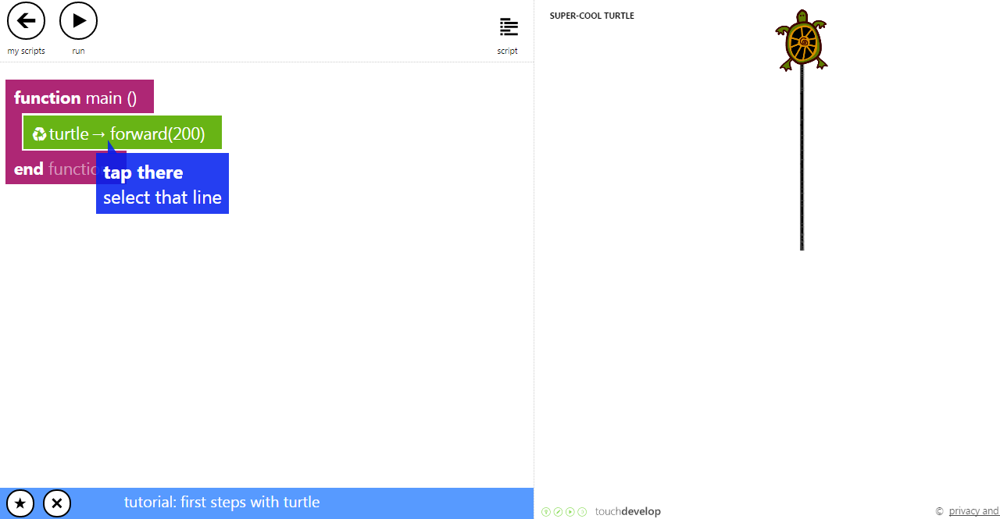

Introduction to TouchDevelop
Brief Introduction
In these tutorials we're going to introduce you to the very first step on how to use Microsoft's touchdevelop online coding. In addition, you will also learn some basic fundamentals on how to think like a programmer through some exercises. We will also include some coding knowledge that is commonly used in many programming language, so you can get used to the idea of programming itself. So what are we waiting for? Let's get started!
Let's Get Started
TouchDevelop is an interactive environment for learning programming. It is mainly designed for mobile devices. It lets you create programs that works on mobile platforms such as iOS, android and windows. Go to this link https://www.touchdevelop.com/. Create an account and log in. You will be directed to the main page as shown in Figure 1. Select you coding skill by clicking the Skill level tab in the main page
How to Practice With Existing Tutorials
In the main page, click Tutorials. You will be directed to this page shown below. Click the "first steps with turtle" tutorial. If it is not in the featured page you can search for it in the search box in the top left. Also try the other tutorials such as jumping bird, coding jetpack jumper to get yourself familiar with TouchDevelop. If you need more help on using TouchDevelop, check out the TouchDevelop Programming on the Go. Get the book here:link
This is the script editor. To run the program, click the run button. Clicking the + button will add a new line. In this tutorial, the turtle goes forward by 200 meters. You can make the turtle go in difference directions and also change the colour.
Social

This is the form page, in this page you can ask questions and find solutions to your problems. In the social page you can create groups and share your achievements in Facebook or twitter. So you and your friends can edit each other's code and most importantly brainstorming!
This section has the libraries where you see the programs created by other people. You can find a range of functions in these libraries such as datatypes.
Creating an App
To create an app, click create script, then choose a blank template.
This is an example of blank app template. To create a new action click the plus button and click action, then a function will be created
Well, that's pretty much it to help you start with touchdevelop! But just to make sure it sticks in your brain, we'll just go straight to some tutorials.
Creating an Action
An action does a task. To create an action, click add new action, the click action. An action contains a function which can be linked to the main function. To link the action to the main function you have to add a line and type the name of the action in the search box and click the action.